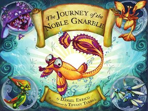

The story of the noble gnarble, a small fish with big dreams! A gnarble left his cozy bed along the ocean floor. He dreamt about a place that he had never seen before! He headed to the surface for a glimpse of sun and sky.
Ages 3-5

The Journey of the Noble Gnarble
 The island of Bum Bum Ba Loo
The island of Bum Bum Ba Loo
Follow two young explorers on a monorhyme (all the lines end in the same rhyme) adventure that takes you across the sea to the mysterious Island of Bum Bum Ba Loo. You'll meet the King and Queen, dance with Bum Bum Balites, and learn the secret to Bum Berry Goo! The only problem is finding your way back again... The Island of Bum Bum Ba Loo is a bedtime tale about discovery, with an ending to encourage the explorer in us all!
Ages 6-8
 The Adventures of Bird
The Adventures of Bird
Bird is his name. And he is a bird. Large, a little ugly and clumsy, but lovable. Eats too much junk food so has lost the ability to fly. Is befriended by two children and they embark on an adventure together.
 The Puzzle Maker
The Puzzle Maker
It's spring, the first day of the new school year, and after taking a shortcut Karen discovers a fantastic hole-in-the-wall puzzle shop. The one puzzle that captures her heart is too expensive, and it's missing a piece. But Karen knows exactly what to do.
Ages 9-15
 Hansel and Gretel
Hansel and Gretel
Hansel and Gretel are the children of a poor woodcutter. When a great famine settles over the land, the woodcutter's wife decides to take the children into the woods and leave them there to fend for themselves, so that she and her husband do not starve to death, because the children eat too much.
 The Little Mermaid
The Little Mermaid
The Little Mermaid dwells in an underwater kingdom with her widowed father (the sea king or Mer-King), her dowager grandmother, and her five older sisters, each of whom had been born one year apart. When a mermaid turns fifteen, she is permitted to swim to the surface for the first time to glimpse the world above, and when the sisters become old enough, each of them visits the upper world one at a time every year. As each returns, the Little Mermaid listens longingly to their various descriptions of the world inhabited by human beings.
Ages 15+
 Knight in Shining Suit
Knight in Shining Suit
Sometimes, getting over pain and betrayal means Getting Up, Getting Even and Getting a Better Man.
Astrid has planned out her perfect wedding. That is before she found out that her fiancé, Bryan, is cheating on her with her cousing-slash-best-friend-slash-maid-of-honor, Geena. And worse, Bryan got Geena pregnant.
Just when Astrid thought it couldn’t get any worse, she received a wedding invitation telling her that her wedding will happen exactly the way she planned it. Except that she is no longer going to be the bride!
So when her parents urged her to attend the wedding “as family”, she planned the perfect revenge. She will put on a show for everyone to see. She’ll show them that she moved on with a better man—handsome, smart, rich and crazy about her. She’s even willing to pay a guy to be her “Knight in Shining Armani”.
 Forbidden Lineage
Forbidden Lineage
Crimsons survive off essence. They're a proud breed who coexist with Spirit Sifters, Witches and Humans, until their beast escapes. When Sofia meets Kai for the first time she is left wondering exactly what he is, for although he shares a similarity with the Crimson race, he is clearly different. Kai...well, his blood is toxic, and not only to Supernaturals but to Humans also. Always controlled through submission, the Guardians have managed to keep him a secret for centuries, but there is so much more to the innocent beast than what meets the eye.